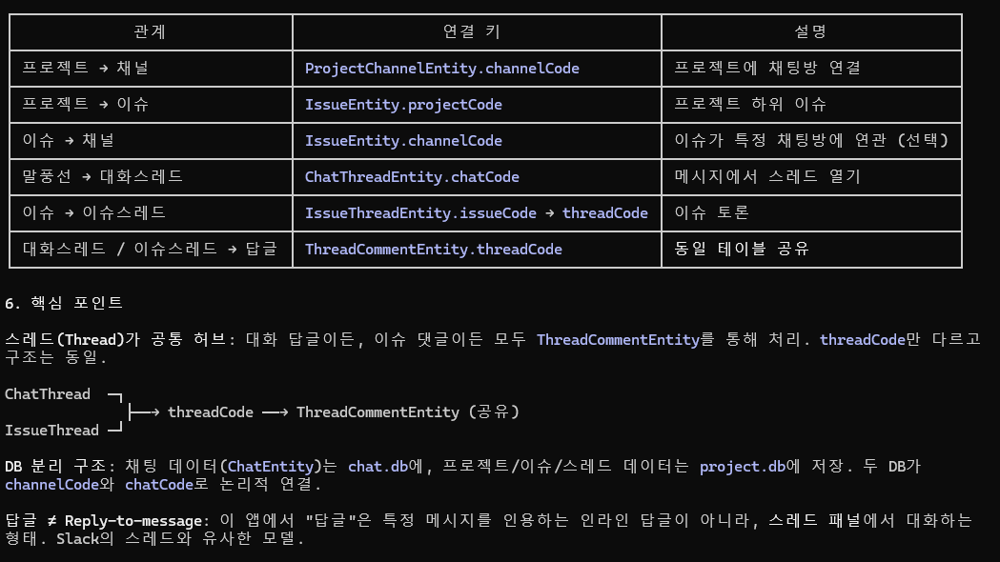

Flow: 말풍선 ↔ 스레드 ↔ 이슈
이 앱에서 "답글"은 메시지 인라인 reply가 아니라 스레드 패널에서 대화하는 형태입니다 (Slack 스타일). 말풍선 스레드와 이슈 스레드는 서로 다른 진입점을 갖지만 결국 같은 댓글 테이블을 공유합니다.
1. 핵심 개념
flowchart TB
CT[ChatThreadEntity
chatCode → threadCode] IT[IssueThreadEntity
issueCode → threadCode] TC[ThreadCommentEntity
threadCode → comments] CT --> TC IT --> TC style TC fill:#0ea5e9,color:#fff
chatCode → threadCode] IT[IssueThreadEntity
issueCode → threadCode] TC[ThreadCommentEntity
threadCode → comments] CT --> TC IT --> TC style TC fill:#0ea5e9,color:#fff
ThreadCommentEntity가 공통 허브. 스레드 출처가 말풍선이든 이슈든 상관없이 threadCode만 다르고 댓글 처리 로직은 동일.
2. 말풍선 → 스레드 열기
sequenceDiagram
autonumber
participant U as 사용자
participant CP as React ChatPage
participant B as Bridge
participant NS as NeoSendHandler
participant REST
participant DB as project.db
U->>CP: 말풍선 길게 누름/우클릭 → "답글"
CP->>CP: onThread(chatCode)
CP->>B: Bridge.apiPost('/comm/getchatthread', {chatCode})
B->>NS: 범용 REST 포워딩
NS->>REST: POST /api/comm/getchatthread
REST-->>NS: {threadCode, commentCount} or {errorCode:404}
alt 기존 스레드 있음
NS-->>CP: {threadCode}
CP->>B: Bridge.apiPost('/comm/getthreadcomments', {threadCode})
CP->>CP: 댓글 목록 렌더링
else 첫 답글 (스레드 없음)
CP->>B: Bridge.apiPost('/comm/createchatthread', {chatCode, channelCode})
NS->>REST: POST /api/comm/createchatthread
REST-->>NS: {threadCode} (서버 발급)
NS->>DB: ChatThreadEntity.upsert
NS-->>CP: {threadCode}
end
U->>CP: 댓글 입력 + 전송
CP->>B: Bridge.apiPost('/comm/addthreadcomment',
{threadCode, userId, contents}) B->>REST: POST /api/comm/addthreadcomment REST-->>B: {commentId} Note over CP: 말풍선 옆에 "N개 답글" 배지 표시
{threadCode, userId, contents}) B->>REST: POST /api/comm/addthreadcomment REST-->>B: {commentId} Note over CP: 말풍선 옆에 "N개 답글" 배지 표시
3. 이슈 → 스레드 자동 생성
sequenceDiagram
autonumber
participant U
participant IP as React IssuePage
participant B as Bridge
participant REST
participant DB as project.db
U->>IP: 이슈 생성 폼 입력
IP->>B: Bridge.apiPost('/comm/createissue',
{title, description, projectCode, ...}) B->>REST: POST /api/comm/createissue REST-->>B: {issueCode} B->>DB: IssueEntity.upsert IP->>B: Bridge.apiPost('/comm/createissuethread', {issueCode}) B->>REST: POST /api/comm/createissuethread REST-->>B: {threadCode} B->>DB: IssueThreadEntity.upsert
+ IssueEntity.threadCode 갱신 Note over IP: 이슈 상세 화면에 스레드 패널 표시 U->>IP: 댓글 입력 IP->>B: Bridge.apiPost('/comm/addthreadcomment',
{threadCode, userId, contents}) B->>REST: POST /api/comm/addthreadcomment Note right of IP: 대화 스레드와 완전히 동일한 API
{title, description, projectCode, ...}) B->>REST: POST /api/comm/createissue REST-->>B: {issueCode} B->>DB: IssueEntity.upsert IP->>B: Bridge.apiPost('/comm/createissuethread', {issueCode}) B->>REST: POST /api/comm/createissuethread REST-->>B: {threadCode} B->>DB: IssueThreadEntity.upsert
+ IssueEntity.threadCode 갱신 Note over IP: 이슈 상세 화면에 스레드 패널 표시 U->>IP: 댓글 입력 IP->>B: Bridge.apiPost('/comm/addthreadcomment',
{threadCode, userId, contents}) B->>REST: POST /api/comm/addthreadcomment Note right of IP: 대화 스레드와 완전히 동일한 API
4. 채널 진입 시 스레드 맵 로드
채널에 들어가면 해당 채널의 모든 말풍선 스레드 정보를 한 번에 가져옵니다. 각 말풍선 옆 "N개 답글" 배지를 그리기 위함.
// ChatPage 진입 시
const result = await Bridge.getThreadsByChannel(channelCode);
// → {threads: [{chatCode, threadCode, commentCount}, ...]}
const threadMap = {};
result.threads.forEach(t => { threadMap[t.chatCode] = t.commentCount; });Android 측은 로컬 chatThreads 테이블에서 즉시 조회 후 REST fallback:
"getThreadsByChannel" -> scope.launch {
try {
val local = projectRepo.getThreadsByChannel(channelCode)
if (local.optJSONArray("threads")?.length() > 0) {
resolveToJs("getThreadsByChannel", local)
} else {
handleRestForward("getThreadsByChannel", "/comm/getthreadsbychannel", params)
}
} catch (_: Exception) {
handleRestForward(...) // fallback
}
}5. 댓글 삭제/수정
| 기능 | Endpoint |
|---|---|
| 댓글 작성 | /comm/addthreadcomment |
| 댓글 삭제 | /comm/deletethreadcomment |
| 댓글 조회 | /comm/getthreadcomments |
6. Push 이벤트
| Event | Code | 처리 |
|---|---|---|
CREATE_CHAT_THREAD_EVENT | 0x028F | ChatThreadEntity upsert + Web 알림 |
DELETE_CHAT_THREAD_EVENT | 0x0298 | 삭제 |
ADD_COMMENT_EVENT | 0x0299 | ThreadCommentEntity upsert + commentCount 증가 |
DELETE_COMMENT_EVENT | 0x029A | commentCount 감소 |
MOD_THREAD_EVENT | 0x028C | 스레드 메타 변경 |


7. 주의사항
- 현재 Android 측
IssueThreadEntity와ChatThreadEntity양쪽 모두 sync 로직이ProjectRepository에 집중되어 있어 Repository 분할이 필요 threadCode는 전역 유니크 가정 (서버 발급). 말풍선/이슈 스레드가 같은 네임스페이스 사용IssueEntity.threadCode는 편의 캐시. 실제 FK는IssueThreadEntity를 거쳐ThreadCommentEntity로 이어짐